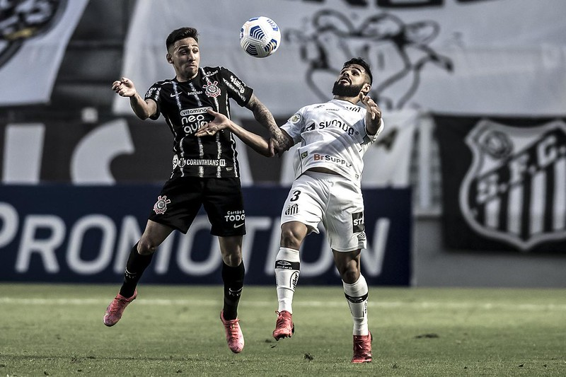
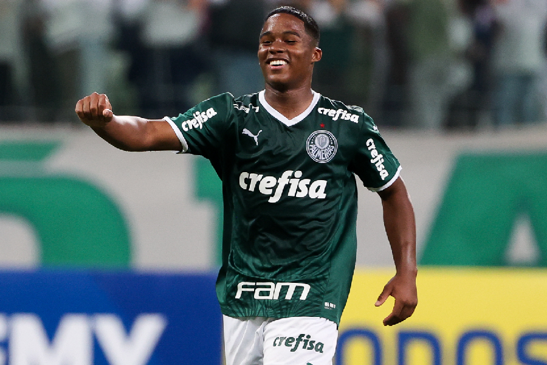
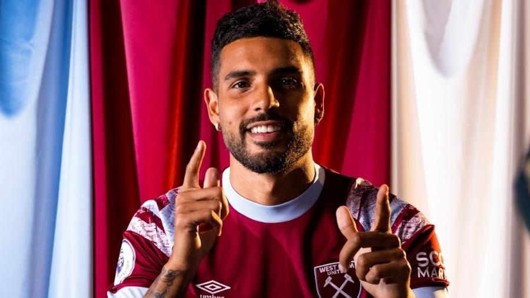
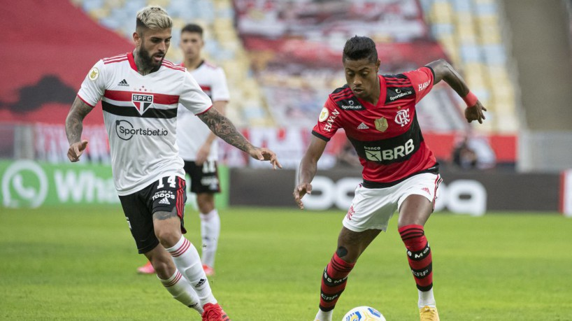
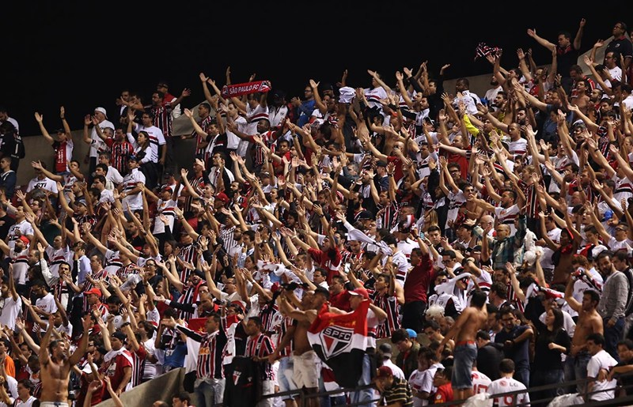

Corinthians
Análise: Yuri Alberto mostra que pode ajudar Corinthians não só com gols
Yuri Alberto não conseguiu dar nenhum chute a gol e nem mesmo para fora na vitória do Corinthians por
3 a 1 sobre o Coritiba, na noite desta quarta-feira, na Neo Química Arena. As seis finalizações
tentadas pelo novo camisa 7 do Timão foram bloqueadas, mas ainda assim o atacante teve ótima
estreia, digna de empolgar a torcida.
Com passes de primeira, mobilidade e bastante combatividade, Yuri Alberto mostrou que pode ajudar o
Corinthians não apenas com gols e que a parceria com Róger Guedes é promissora. Atrás do trio de
frente havia outro tripé, formado por Cantillo, Maycon e Roni. O colombiano era o principal
responsável por iniciar as jogadas, recuando bastante para buscar a bola e dar lançamentos e passes
em profundidade. Eleito o Craque do Jogo (com justiça), ele não só distribuiu o jogo, como também
foi importante com desarmes e interceptações. Partidaça!

Cássio se torna o terceiro jogador com mais partidas pelo Corinthians
Goleiro Cássio segue fazendo história e atingindo marcas pelo Corinthians. Nesta quarta-feira, na
vitória por 3 a 1 sobre o Coritiba, na Neo Química Arena, o camisa 12 tornou-se o terceiro jogador
com mais partidas pelo Timão.
Com 602 jogos, Cássio igualou outro goleiro lendário do Corinthians: Ronaldo Giovanelli. Aos 35 anos
e desde 2012 no Corinthians, Cássio coleciona outros recordes, como o de maior vencedor da história
do clube. São nove títulos conquistados de 2012 para cá, com destaque para a Libertadores, inédita
até então na história alvinegra, e o Mundial, ambos em 2012.

Palmeiras
Endrick assina primeiro contrato com o Palmeiras: "É o time do meu coração"
O atacante Endrick assinou o seu primeiro contrato profissional com o Palmeiras na manhã desta quinta-feira, no dia em que completa 16 anos.
O primeiro registro da joia da base do Verdão terá validade inicial de três anos e uma multa rescisória de 60 milhões de euros (cerca de R$ 334 milhões).
– É um sentimento de orgulho, de ver o que plantei e estou colhendo, com o início de um novo ciclo. Sentimento de gratidão pela confiança do Palmeiras.
Vou continuar com humildade e pés no chão. O Palmeiras foi o único clube que sempre acreditou em mim. Me acolheu desde os dez anos, quando fiz o teste aqui.
Sempre apostou em mim, e agora é a prova viva disso, quando assino meu contrato profissional. Para mim, nunca está bom, quero sempre mais. O Palmeiras vai
crescer cada vez mais, é o maior campeão do Brasil. É o time do meu coração, vou ter gratidão pelo resto de minha vida – afirmou o atacante, ao site do Verdão.

Valia mais do que Neymar? Por que o Palmeiras aceitou vender Veron por 10 milhões de euros
Eleito melhor jogador da Copa do Mundo Sub-17 em 2019, Gabriel Veron se despede do Palmeiras como uma das maiores revelações da base do clube e uma expectativa
maior do que a realidade. O garoto de 19 anos terá a oportunidade de provar no Porto, de Portugal, que ainda pode ser aquele jogador "extra-classe" que um dia se imaginou.
Se a parte esportiva foi prejudicada por uma sequência de lesões que atrapalharam a regularidade aguardada por dirigentes e torcedores, as projeções financeiras ficaram bem abaixo do imaginado: 10 milhões de euros (R$ 55,4 milhões),
com o Verdão, mesmo dono de 60% dos direitos econômicos, ficando com cerca de 80% do valor (R$ 44,4 milhões).Em 2020, com poucos meses de Palmeiras, Abel Ferreira revelou que já havia recebido informações sobre Gabriel Veron ainda na
Europa e, após uma goleada sobre o Delfín, pela Libertadores, chegou a afirmar que era "impossível vender por menos do que o Neymar foi vendido ao Barcelona".
– Vou contar uma história. O Luis Campos é diretor do Lille (da França) e foi meu técnico quando tinha a idade do Veron. Eu fui falar com ele sobre vir para o Palmeiras. O primeiro jogador que ele falou foi sobre o Veron. Ele conhece
todos os jovens com potencial. Sabe que tem muita qualidade. Sempre digo ao Veron para se lembrar o que o trouxe a este nível. É impossível o Palmeiras vender este jogador por menos do que o Neymar foi vendido ao Barcelona – disse.
Santos
Santos encerra novela, paga multa de Felipe Jonatan ao Ceará e anuncia lateral-esquerdo
Depois de ficar mais de um mês afastado por lesão, Lucas Pires voltou a ser relacionado para uma partida do Santos. Para voltar ao time titular, porém, o lateral esquerdo terá que desbancar Felipe Jonatan, que vem se destacando nos últimos jogos.
O ex-jogador do Ceará, inclusive, foi um dos principais nomes da vitória de 1 a 0 do Peixe sobre o São Paulo, neste domingo. Em entrevista coletiva, o atleta de 24 anos elogiou Lucas Pires e destacou a boa relação dos dois.
“Tem um potencial muito grande para jogar na Europa, que escuta muitos conselhos e sabe o momento de suportar as pressões. Vem desempenhando bem o seu trabalho, desejo sorte a ele. É uma disputa sadia, e quem tem a ganhar é o Santos, com cada um
buscando o seu espaço com hombridade. Acredito que quem estiver atuando ajudará o Santos”, disse.
A última aparição de Lucas Pires foi no dia 6 de julho. Na ocasião, ele foi titular no empate de 1 a 1 com o Deportivo Táchira-VEN, pela partida de volta das oitavas de final da Sul-Americana. O Menino da Vila sofreu uma pacanda durante um treino
no dia 8 e, após exames de imagem, foi constatada uma lesão parcial no ligamento colateral medial do joelho direito.
Santos lucra quase R$ 2 milhões com a venda de Emerson Palmieri para o West Ham
O lateral-esquerdo Emerson Palmieri foi vendido pelo Chelsea para o West Ham, ambos da Inglaterra, por 13 milhões de libras (quase R$ 79 milhões, de acordo com a cotação desta terça-feira). O Santos, clube que formou o jogador, ficará com 2,5% do valor.
O Peixe tem direito à recompensa financeira por ser justamente o clube formador de Emerson Palmieri. A porcentagem do valor total da operação representa 325 mil libras (R$ 1,9 milhão, também de acordo com a cotação desta terça-feira).
O Santos comemora a ida de Emerson Palmieri para o West Ham e espera receber o valor o quanto antes para utilizá-lo no fluxo de caixa.
O lateral-esquerdo foi revelado pelo Peixe e conquistou duas vezes o Campeonato Paulista e uma vez, ainda na base, a Copa São Paulo de Futebol Júnior.
Depois de deixar a Vila Belmiro, Emerson Palmieri passou por Palermo, Roma, Chelsea, Lyon e agora West Ham. O jogador ainda se naturalizou italiano para atuar pela seleção do país.

São Paulo
Letal, Flamengo vence o São Paulo no Morumbi e abre vantagem na semifinal
Não foi aquele estilo de jogo a que os torcedores se acostumaram, mas, com a qualidade do elenco, bastam poucas oportunidades para o Flamengo ser letal e definir a partida. E foi desta forma que o Rubro-Negro construiu a vitória por 3 a 1 sobre o São Paulo
em pleno Morumbi, garantindo uma vantagem importante, visto que pode perder por até um gol de diferença no duelo da volta que avança à final da Copa do Brasil. Os dois times voltam a se enfrentar em 14 de setembro, no Maracanã. Ao longo dos 90 minutos, o
Tricolor criou mais oportunidades, mas o Flamengo se beneficiou de falhas do adversário para fazer seus gols com João Gomes, Gabigol e Everton Cebolinha. Rodrigo Nestor fez o de
O jogo de volta entre as equipes acontecerá somente daqui três semanas. Antes disso, o Flamengo terá pela frente os confrontos pela semifinal da Libertadores contra o Vélez Sarfield, sendo o da ida, na Argentina, na próxima quarta-feira (31), e o da volta,
no Maracanã, em 7 de setembro. Além disso, ainda tem mais três jogos pelo Brasileirão antes do segundo duelo da semifinal: Botafogo (domingo), Ceará (4/9) e Goiás (11/9). Já o São Paulo tem ainda os jogos das semifinais da Copa Sul-Americana diante do
Atlético-GO, em 1º e 8 de setembro, em Goiânia e no Morumbi, respectivamente. Pelo Brasileirão, o Tricolor tem pela frente o Fortaleza (domingo), Cuiabá (4/9) e Corinthians (11/9)

Haja grana! São Paulo x Flamengo registra maior renda bruta da temporada 2022; confira ranking
O jogo de ida entre São Paulo e Flamengo, com vitória do Rubro-Negro por 3 a 1, pela semifinal da Copa do Brasil, registrou a maior renda da temporada 2022. Com 51.365 torcedores no Morumbi, a partida teve uma renda bruta de R$ 6.238.678,00. A receita
supera os R$ 5.505.315,00 arrecadados na final do Campeonato Paulista entre o próprio São Paulo contra o Palmeiras.As duas partidas citadas acima são as únicas do Tricolor Paulista como mandante entre as 10 maiores arrecadações do ano. Na sequência,
aparecem os dois confrontos entre Flamengo e Corinthians, pelas quartas de final da Libertadores. A melhor renda bruta foi no jogo de volta, que teve vitória do time carioca por 1 a 0, no Maracanã, e quase R$ 6 milhões de arrecadação com ingressos
vendidos. Na partida de ida, a renda foi de um pouco mais R$ 5 milhões, na Neo Química Arena, e o Flamengo saiu vitorioso novamente com 2 a 0 no placar. Confira o top 10 abaixo.
